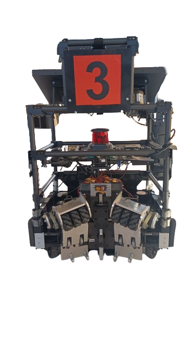

Txomin BISBAU
Txomin
Bisbau
01
—
2023
|
02
—
2024
|
Livrable projet
03
—
2024-2026
|
Dassault UAV Challenge 2023
Dassault UAV Challenge 2024
04
—
2025
|

Livrable projet
—
2025-2026
|
06
—
2026
|
—
2026
|
Raspberry Pi
Hackathons
01
24H Pour Créer
02
Ocean Hackathon
01
Catia V5
SolidWorks
Fusion 360
Abaqus
02
C++
Python
MatLab / Simulink
ROS 2
03
QGroundControl
Mission Planner
INAV
SpeedyBee
Pixhawk
04
SQL
ADISRA (C#)
SIMATIC Manager
Télécharger (FR)
Download (EN)
Email copié ✓